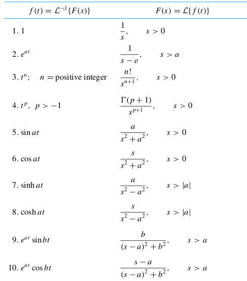

Ekler
Seriler
Çok basit bir sonlu seri
$$ 1 + \theta + \theta^2 + ... + \theta^{n-1} $$
Üstteki toplamı daha kısa bir formülle ifade edebilir miyiz?
$$ s_n = 1 + \theta + \theta^2 + ... + \theta^{n-1} $$
$$ \theta s_n = \theta + \theta^2 + \theta^3 + ... + \theta^n $$
Eğer 2. ifadeyi 1.'den çıkartırsak, pek çok terim iptal olacaktır,
$$ s_n - \theta s_n = 1 - \theta^n $$
$$ s_n ( 1 - \theta) = 1 - \theta^n $$
$$ s_n = \frac{1 - \theta^n}{1 - \theta} $$
Çoğunlukla fonksiyonlar sonsuz bir serinin toplamı olarak temsil edilebilirler. Mesela ünlü üstel baz $e^x$in açılımı [8,9],
$$ e^x = 1 + x + \frac{1}{2!}x^2 + \frac{1}{3!}x^3 + ... $$
İspat
$e^x$'in özelliği nedir? Türevinin kendisine eşit olmasıdır. O zaman öyle bir seri düşünelim ki türevini alınca kendisine eşiti olsun. Mesela
$$ 1 + x + x^2 + x^3 + ... $$
serisi "neredeyse" bu şarta uyuyor, çünkü türevini alınca
$$ 0 + 1 + 2x + 3x^2 + ... $$
Bu seri, $e^x$ açılımına benzer, üstel değerler doğru, ama katsayılar tam uymuyor. Onu telafi edebiliriz. $2x$'i $2$ ile, $3x^2$'i $3$ ile, vs bölersek, yani $n=0,1,2,..$ için $n!$ ile bölersek, katsayılar da uyumlu hale gelir, yani
$$ e^x = \sum_{ n=0}^{\infty} \frac{ x^n}{n!} $$
Bir güç serisinin genel şekli
$$ f(x) = a_0 + a_1(x-x_0) + a_2(x-x_0) + ... = \sum_{ n=0}^{\infty} a_n (x-x_0)^n$$
olarak gösterilir, $a_n$ katsayıları bilinmesi gereken katsayılardır. Çoğu durumda $x_0=0$'dir. O zaman
$$ f(x) = \sum_{ n=0}^{\infty} a_n x_n^n = 1+x+x^2+x^3+..$$
diye gider. Herhangi bir polinom herhangi bir $c$ merkezi etrafında rahat bir şekilde bir güç serisi (power series) olarak temsil edilebilir (muhakkak bu serinin çoğu katsayısı sıfır değerinde olacaktır).
Bir güç serisinin faydalı olması için sabit bir sayıya yakınsaması (converge) gerekir. Mesela matematikteki en önemli güç serilerinden biri olan geometrik serilere bakalım,
$$ 1 + x + x^2 + x^3 + .. = \sum_{n=0}^{\infty} x^n $$
Bu toplam $n \to \infty$ iken bir sayıya yaklaşır mı?
$$ s_N = 1 + x + x^2 + .. $$
diyelim. Şimdi bir numara, iki tarafı $x$ ile çarpalım,
$$ x s_N = x + x^2 + x^3 + .. $$
Eğer $s_N - xs_N$ hesaplarsak ne olur? İki üstteki formülde eşitliğin sağ tarafından bir üsttekinin sağ tarafını çıkartırız, her iki tarafta da $x + x^2 + x^3 + ..$ var ve bunlar iptal olur, geri kalanlar,
$$ s_N - xs_N = 1 $$
$$ s_N(1-x) = 1 $$
$$ s_N = \frac{1}{1-x} $$
Bu seri "başlangıcı 1, oranı $x$ olan bir geometrik seri" olarak ta ifade edilebilir, oran her terimin ortak katsayısı gibi görülür. Eğer başlangıç 1 oran $1-\alpha$ olsaydı,
$$ 1 + (1-\alpha) + (1-\alpha)^2 + .. $$
o zaman sonuç
$$ \frac{1}{1 - (1-\alpha)} $$
olarak çıkardı. Bu üstteki yöntemle kontrol edilebilir. Yani sonuç için başlangıç değeri bölünene, oran denilen değer ise 1'den çıkartılıp bölünene yazılır.
Bir diğer seri
$$ 1 - x + x^2 - x^3 + .. $$
güç serisi neye yaklaşır?
Yine aynı numara, ama bu sefer $-x$ ile çarpalım,
$$ s_N = 1 - x + x^2 - x^3 + .. $$
$$ -x s_N = -x + x^2 - x^3 + .. $$
- formülden 2.'yi çıkartalım,
$$ s_N + x s_N = 1$$
$$ (x+1)s_N = 1$$
$$ s_N = \frac{1}{x+1} $$
Türev Alırken Bölüm Kuralı (Quotient Rule)
Bölüm kuralı şöyle gösterilir
$$ \frac{ u(x)}{v(x)} = \frac{u(x)'v(x) - u(x)v(x)'}{v(x)^2} $$
Ya da $x$ göstermeden
$$ \frac{ u}{v} = \frac{u'v - uv'}{v^2} $$
Bu formülü hatırlamak biraz zor gelebilir. Eğer hatırlamıyorsak hatırlaması daha basit olan Çarpım Kuralı (product rüle) üzerinden türetebiliriz. Çarpım kuralı bildiğimiz gibi
$$ (uv)' = u'v + uv' $$
Burada bir numara yaparak
$$ (u \ \frac{ 1}{v})' $$
üzerinde Carpım Kuralını kullanarak türev alacağız, böylece otomatik olarak arka planda aslında $u/v$'nin türevini aldırtmış olacağız.
$$ \bigg(u \ \frac{ 1}{v}\bigg)' = u \bigg(\frac{1}{v}\bigg)' + u' \bigg(\frac{1}{v}\bigg) $$
Bu arada
$$ \bigg(\frac{ 1}{v}\bigg)' = -\frac{v'}{v^2} $$
Bölümde $v'$ var, çünkü unutmayalım $v$ aslında $v(x)$, o zaman ana formülde yerine koyalım
$$ = -u\frac{v'}{v^2} + u' \bigg(\frac{1}{v}\bigg) $$
$$ = \frac{u' }{v} -\frac{uv'}{v^2} $$
Birinci terimde bölüm ve böleni $v$ ile çarpalım, ki iki terimi birleştirebilelim,
$$ = \frac{u'v }{v^2} -\frac{uv'}{v^2} = \frac{u'v-uv'}{v^2} $$
Bazı $e$, Log Özellikleri
Bazen $\log$ bazen $\ln$ kullanıldığını görürsünüz. Eğer $\ln$ kullanılırsa bu $\log$ ifadesinin $e$ baz kullanan hali demektir, yani $\log_e$.
Çarpım log'u, logların toplamı olur.
$$ \log xy = \log x + \log y $$
Bölüm log'u, logların çıkartılması olur.
$$ \log x/y = \log x - \log y
\qquad (1)
$$
Aynı baz kullanan çarpımlar, tek baza indirilip üstleri toplanabilir.
$$ e^a \cdot e^b = e^{a+b} $$
Üstü olan bir ifadenin log'u, üst değerini aşağı indirir.
$$ \log(x^y) = y \log(x) $$
Üstün üstü (son üst tüm bazı kapsayacak şekilde ise) direk üstlerin çarpımına çevirilebilir.
$$ (e^x)^y = e^{xy} $$
$\ln$'nin bazı $e$ olduğuna göre, $e$ üzeri $\ln$ birbirini iptal eder, yani
$$ x = e^{\ln x} $$
Bu ifade (1)'den türetilebilir ama yine de ayrı vermek iyi olur, $1/x$'in log'u $x$'in negatifini verir.
$$ \log(1/x) = -\log(x) $$
Kısmi Kesirler Yöntemi (Partial Fractions Method)
Bazen şu şekildeki bir kesiri
$$ \frac{8x + 22}{(x-1)(x+5)} $$
bölendeki her çarpan ayrı bir kesir parçasında olacak şekilde o parçaların toplamı olarak göstermek faydalıdır.
$$ \frac{...}{(x-1)} + \frac{...}{(x+5)} $$
Bu tür bir parçalı kesirin verisini almak çok daha kolaydır mesela. Fakat bu parçalama işlemini nasıl yapacağız?
Cebir kullanarak bu problemi çözebiliriz. Üstte nokta nokta olan yerlerin ne olduğunu merak ediyoruz, o zaman onlara $A,B$ değişkenlerini atarsak
$$ \frac{A}{(x-1)} + \frac{B}{(x+5)} = \frac{8x + 22}{(x-1)(x+5)}$$
Eğer bölüm kısmında temiz bir eşitlik elde etmek istiyorsak, o zaman üstteki kesirlerin bölen kısmını birbirinin aynısı haline getirmeliyiz. İlk terimin bölüm, bölen kısmını $(x+5)$, ikincisinin bölüm, bölen kısmını $(x-1)$ ile çarparsak, bu eşitliği elde ederiz.
$$ \frac{(x+5)A}{(x-1)(x+5)} + \frac{(x-1)B}{(x+5)(x-1)} = \frac{8x + 22}{(x-1)(x+5)} $$
Bölen kısmı birbirine eşit olduğuna göre, artık sadece kesirlerin üst kısmını kullanabiliriz, çünkü aradığımız bilinmeyenler orada.
$$ (x+5)A + (x-1)B = 8x+22 $$
Eşitliğin sol tarafının açılımını düşünürsek,
$$ xA + .. + Bx + .. = 8x + .. $$
$$ x(A + B) + .. = 8x + .. $$
ve her iki tarafta $x$'in katsayılarının aynı olması zorunluluğundan hareketle
$$ A + B = 8 $$
olacaktır. Benzer şekilde geri kalan sabitleri eşitlersek
$$ 5A - B = 22 $$
O zaman elimizde iki bilinmeyen, iki denklem var, bu sistemi çözmek çok kolay!
$$ B = 5A - 22 $$
Öteki denkleme sokalım
$$ A + 5A - 22 = 8 $$
$$ 6A = 30 $$
$$ A = 5 $$
$$ B = 3 $$
Demek ki kısmi kesirlerimiz şöyle olacak
$$ \frac{5}{(x-1)} + \frac{3}{(x+5)} = \frac{8x + 22}{(x-1)(x+5)}$$
İçiçe Fonksiyonlar (Composite Functions) [1, sf. 191, 227]
$$ y = \frac{3}{2}x = \frac{1}{2}3x $$
bir içiçe fonksiyon olarak görülebilir.
$$ y = \frac{1}{2}u, \ u=3x $$
dersek, $y$ içindeki $u$ bir başka fonksiyon olabilir. Yani aslında
$$ y = f(u) $$
$$ u = g(x) $$
Yani
$$ y = f(g(x)) $$
Üstteki form bazen
$$ y = f \circ g $$
olarak ta gösterilebiliyor.
Zincirleme Kanunu (İçiçe Fonksiyonlar İçin)
Eğer $f(u)$, $u=g(x)$ noktasında, ve $g(x)$, $x$ noktasında türevi alınabilir durumda ise, o zaman içiçe fonksiyon $(f \circ g)(x) = f(g(x))$ $x$ noktasında türevi alınabilir demektir, ve
$$ (f \circ g)'(x) = f'(g(x)) \cdot g'(x) $$
doğru olacaktır. Leibniz notasyonu ile
$$ \frac{ dy}{dx} = \frac{ dy}{du} \cdot \frac{ du}{dx} $$
Üstteki formülü kesirlerin çarpımı olarak görmek kısmen doğru olabilir, en azından hatırlamak için iyi, ama formel ispat başka şekilde yapılıyor, detaylar için "$dy/dx$ bir kesir olarak görülebilir mi?" yazısına bakabilirsiniz.
Türev alırken $'$ işaretinin kullanılabilme sebebi fonksiyonda tek değişken olduğu zaman neye göre türev alındığının bariz olması.
Örnek
Başta verilen örnek için $dy/dx$' i bulun.
$$ \frac{ dy}{dx} = \frac{ 3}{2}, \ \frac{dy}{du} = \frac{ 1}{2}, \ \frac{ du}{dx} = 3 $$
$$ \frac{ dy}{dx} = \frac{ dy}{du} \cdot \frac{ du}{dx} $$
O zaman
$$ \frac{ 1}{2} \cdot 3 = \frac{ 3}{2} $$
Parçalı Entegral (Integration by Parts)
Aslında parçalı entegral türevlerin çarpım kuralının bir uzantısı sadece [12, sf. 17].
$$ \frac{\mathrm{d} }{\mathrm{d} x} [u v] = \frac{\mathrm{d} u}{\mathrm{d} x} v + u \frac{\mathrm{d} v}{\mathrm{d} x} $$
Şimdi iki tarafın entegralini alalım,
$$ \int_{a}^{b} \frac{\mathrm{d}}{\mathrm{d} x} [u v] \mathrm{d} x = \int_{a}^{b} \frac{\mathrm{d} u}{\mathrm{d} x} v \mathrm{d} x + \int_{a}^{b} u \frac{\mathrm{d} v}{\mathrm{d} x} \mathrm{d} x $$
Altta sol taraftaki değişim Temel Calculus Kanunundan geliyor,
$$ \Rightarrow u v |_{a}^{b} = \int_{a}^{b} \frac{\mathrm{d} u}{\mathrm{d} x} v \mathrm{d} x + \int_{a}^{b} u \frac{\mathrm{d} v}{\mathrm{d} x} \mathrm{d} x $$
Yer değişimi sonrası,
$$ \Rightarrow \int_{a}^{b} u \frac{\mathrm{d} v}{\mathrm{d} x} \mathrm{d} x = u v |_{a}^{b} - \int_{a}^{b} \frac{\mathrm{d} u}{\mathrm{d} x} v \mathrm{d} x $$
Bu parçalı entegral formülüdür. Daha rahat hatırlamak için çoğu zaman $u=f(x),v=g(x)$ kabul edilir, o zaman $du = f'(x)dx$ ve $dv = g'(x)dx$ olur, ve şu form ortaya çıkar,
$$ \int u \mathrm{d} v = uv - \int v \mathrm{d} u$$
Bu formül birinci entegral $\int u \mathrm{d} v$'yi ikinci bir entegral $\int v \mathrm{d} u$ üzerinden tarif etmiş olur, bazı durumlarda ikinci entegral hesabı daha kolay olabileceği için o tercih edilebilir, ve parçalı entegral formülüyle o entegrale geçiş yapılmış olur [1, sf. 562].
Eşsizlikler (Singularities)
Eşsiz nokta bir fonksiyonun analitikliği kaybettiği yerdir. Sıfır ile bölünmek mesela eşsizlik sebeplerinden bir tanesidir. Ya da içinde dallanma noktası taşıyan tüm fonksiyonlar o noktada analitikliği kaybederler, türevleri alınamaz, bu sebeple eşsizlik taşırlar. Mesela $f(z) = z^{1/2}$ ya da $f(z) = \sqrt{z}$ fonksiyonunda, her $z$ değeri için iki tane $z^{1/2}$ değeri vardır.
Basit örnek,
$$ f(z) = \frac{ \sin z}{z} $$
Bu fonksiyon $z=0$ noktasında tanımsızdır, çünkü $f(0) = 0/0$ ve sıfır ile bölmek tanımsızdır, o zaman $f(z)$ sonlu hayali düzlemin her yerinde analitiktir, sadece $z=0$ noktasında değildir [5, sf 364].
Şimdi ilginç bir numara, bazen eşsizliği "çıkartmak" mümkündür; önce suna dikkat, $z \to 0$ iken fonksiyonun limiti var, $$ \lim_{z \to 0} \frac{ \sin z}{z} = \lim_{z \to 0} \frac{\cos z}{1} = 1 $$
Üstteki $\cos z/1$ geçişini yapabildik çünkü L'Hospital kuralını hatırlarsak $\lim_{z \to z_0} f(z)/g(z) = \lim_{z \to z_0} f'(z)/g'(z)$. O zaman parçalı bir fonksiyon yaratarak eşsiz noktadaki "boşluğu doldurmak" mümkündür, yani bu fonksiyonu her noktasında türevi alınır hale getirebiliriz. Fonksiyon $f(z)$'yi "sarmalayan" yeni bir $f(z)$ yaratırsak,
$$ g(z) = \left\{ \begin{array}{ll} \frac{\sin z}{z} & z \ne 0 \\ 1 & z = 0 \end{array} \right. $$
Bu fonksiyonun $z=0$ noktasında artık türevi alınabilir. Kontrol edelim,
$$ f'(0) = \lim_{z \to 0} \frac{f(0)-f(z)}{z} $$
$$ = \lim_{z \to 0} \frac{1-\sin(z)/z}{z} $$
$$ = \lim_{z \to 0} \frac{z-\sin(z)}{z^2} $$
L'Hospital,
$$ = \lim_{z \to 0} \frac{1 - \cos z}{2z} $$
Tekrar
$$ = \lim_{z \to 0} \frac{ \sin(z)}{2} $$
$$ = 0 $$
$z=0$ noktasına çıkartılabilen eşsizlik ismi verilir, çünkü fonksiyonun eşsizlik noktasındaki değerini o noktadaki limiti haline getirirsek, o noktadaki eşsizliği çıkartmış oluruz.
Bazı yaygın z-transform'ları



Kaynaklar
[1] Thomas, Thomas Calculus, 11th Edition
[2] Ifeachor, Digital Signal Processing, pg. 105
[3] Slicer, Digital Signal Processing using Matlab, pg. 119
[5] B. A. Shenoi, Introduction to DSP and Filter Design, pg. 41
[6] Mauch, Introduction to Methods of Applied Mathematics
[7] Mattuck, Introduction to Analysis
[8] Wikipedia, Power Series, http://en.wikipedia.org/wiki/Power_series
[9] Moore, Introduction to Partial Differential Equations
[10] Strogatz, Infinite Powers
[12] Gockenbach, Understanding and Implementing FEM
Yukarı